tmp <- c( rnorm(30, mean = -3), rnorm(30, mean = 3) )
x <- cbind(x = tmp, y = rev(tmp))
plot(x)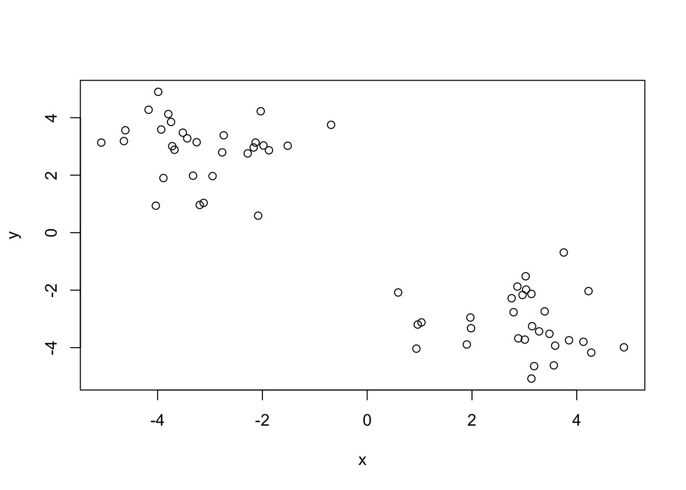
First step is o make up some data with a known structure, so we know what the answer should be.
tmp <- c( rnorm(30, mean = -3), rnorm(30, mean = 3) )
x <- cbind(x = tmp, y = rev(tmp))
plot(x)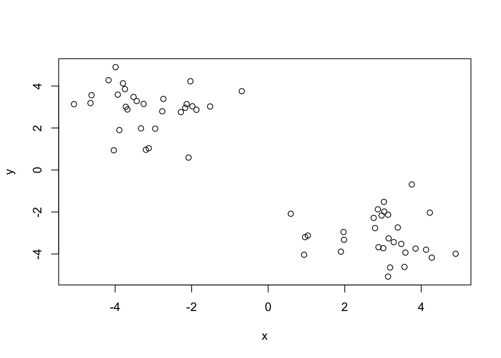
Now we have some structured data in x. Let’s see if k-means is able to identify the two groups.
k <- kmeans(x, centers = 2, nstart = 20)
kK-means clustering with 2 clusters of sizes 30, 30
Cluster means:
x y
1 2.925021 -3.144985
2 -3.144985 2.925021
Clustering vector:
[1] 2 2 2 2 2 2 2 2 2 2 2 2 2 2 2 2 2 2 2 2 2 2 2 2 2 2 2 2 2 2 1 1 1 1 1 1 1 1
[39] 1 1 1 1 1 1 1 1 1 1 1 1 1 1 1 1 1 1 1 1 1 1
Within cluster sum of squares by cluster:
[1] 62.46688 62.46688
(between_SS / total_SS = 89.8 %)
Available components:
[1] "cluster" "centers" "totss" "withinss" "tot.withinss"
[6] "betweenss" "size" "iter" "ifault" Let’s explore k:
k$size[1] 30 30k$centers x y
1 2.925021 -3.144985
2 -3.144985 2.925021plot(x, col = k$cluster)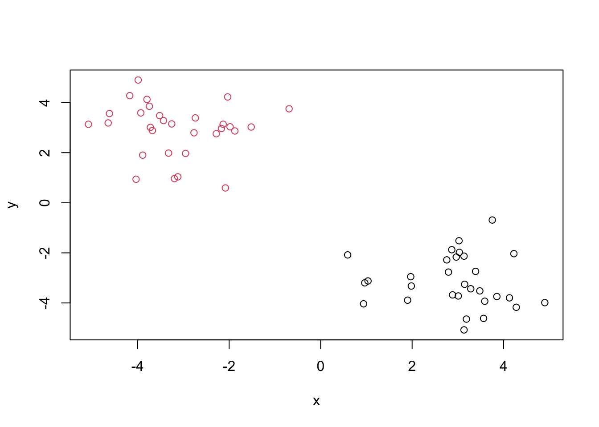
Now we can add the clusters centers:
plot(x, col = k$cluster)
points(k$centers, col= "blue", pch = 15)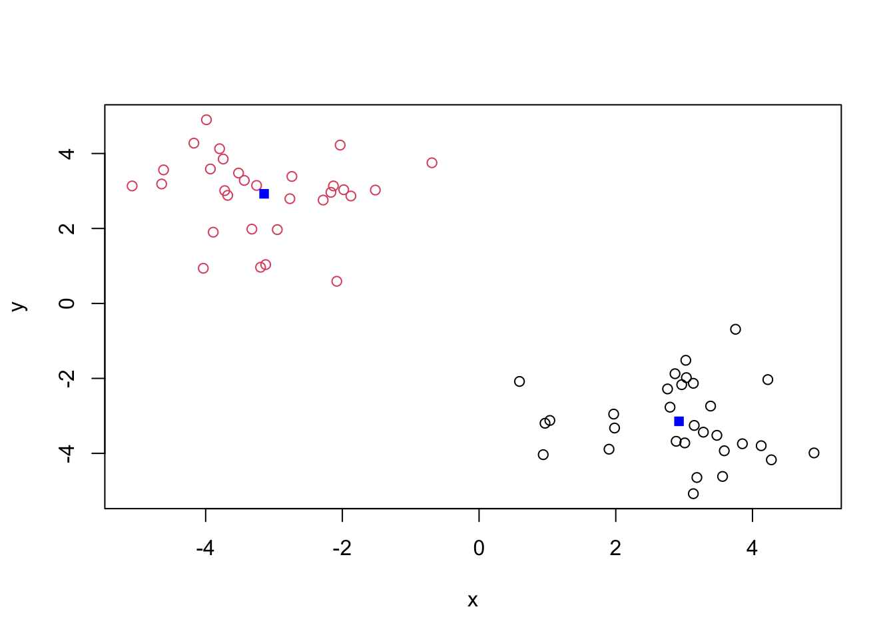
An example when we select the wrong number of cluster for k-means.
k_3 <- kmeans(x, centers = 3, nstart = 20)
plot(x, col = k_3$cluster)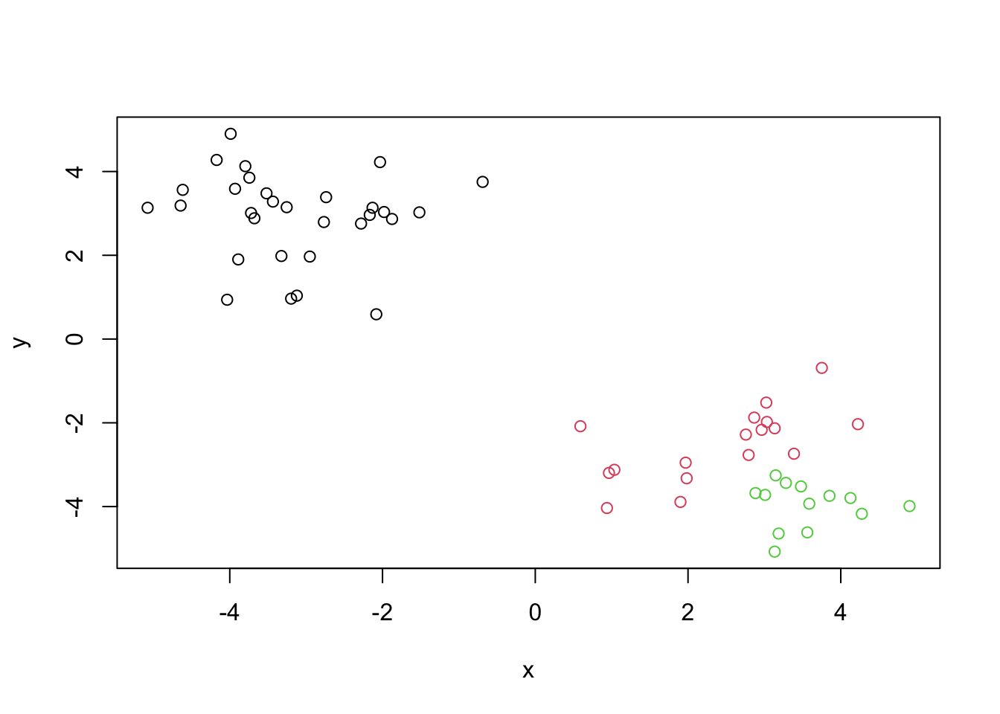
Let’s use the same data as before, which we stored in ‘x’. We will use the 'hclust()' function.
clustering <- hclust( dist(x) )
clustering
Call:
hclust(d = dist(x))
Cluster method : complete
Distance : euclidean
Number of objects: 60 plot(clustering)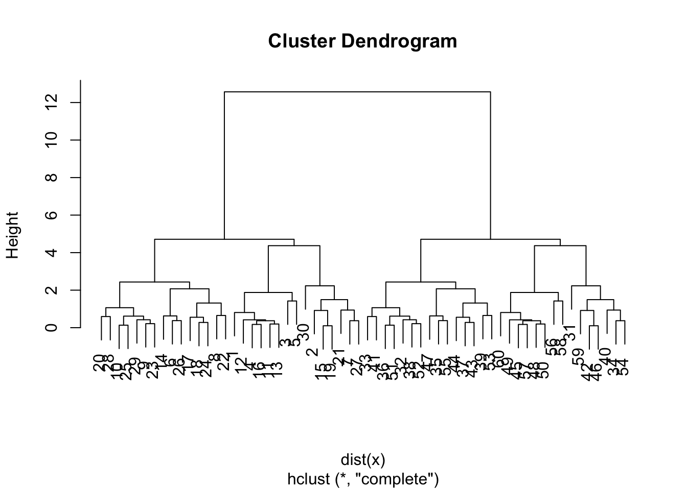
Let’s add a horizontal line
plot(clustering)
abline(h=10, col="pink")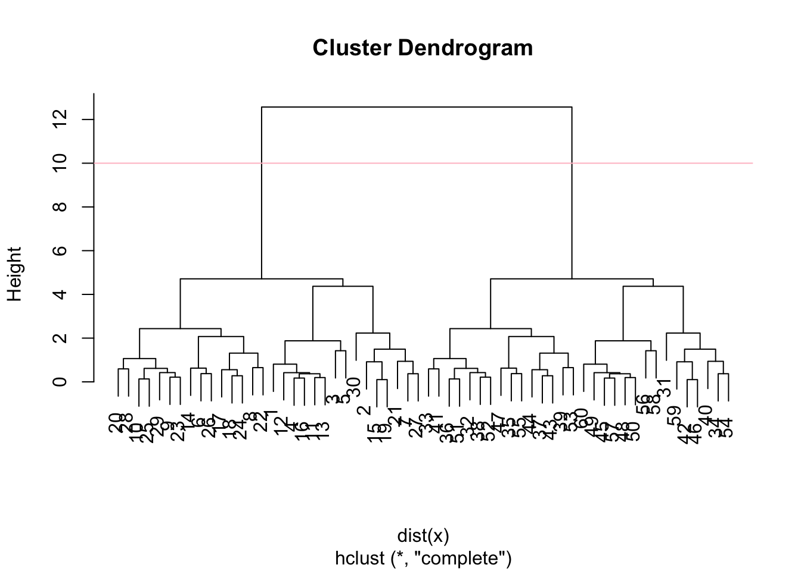
To get our results (i.e., memebership vector) we need to “cut” the tree. The function for doing that is cutree().
subgroups <- cutree(clustering, h = 10)
subgroups [1] 1 1 1 1 1 1 1 1 1 1 1 1 1 1 1 1 1 1 1 1 1 1 1 1 1 1 1 1 1 1 2 2 2 2 2 2 2 2
[39] 2 2 2 2 2 2 2 2 2 2 2 2 2 2 2 2 2 2 2 2 2 2Plotting this…
plot(x, col = subgroups)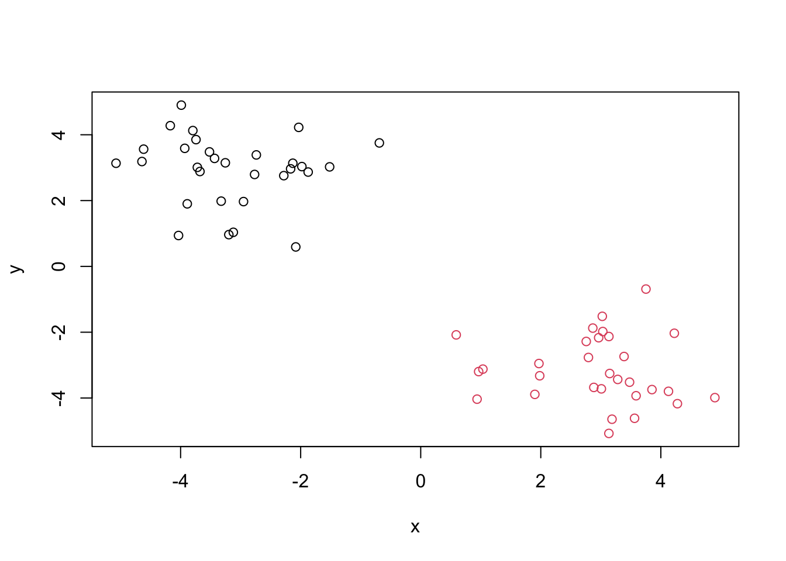
You can also “cut” your tree with the number of clusters you want:
cutree(clustering, k = 2) [1] 1 1 1 1 1 1 1 1 1 1 1 1 1 1 1 1 1 1 1 1 1 1 1 1 1 1 1 1 1 1 2 2 2 2 2 2 2 2
[39] 2 2 2 2 2 2 2 2 2 2 2 2 2 2 2 2 2 2 2 2 2 2First was to read the data.
url <- "https://tinyurl.com/UK-foods"
x <- read.csv(url, row.names = 1)
head(x) England Wales Scotland N.Ireland
Cheese 105 103 103 66
Carcass_meat 245 227 242 267
Other_meat 685 803 750 586
Fish 147 160 122 93
Fats_and_oils 193 235 184 209
Sugars 156 175 147 139Now we can generate some basic visualizations
barplot( as.matrix(x), col = rainbow( nrow(x) ) )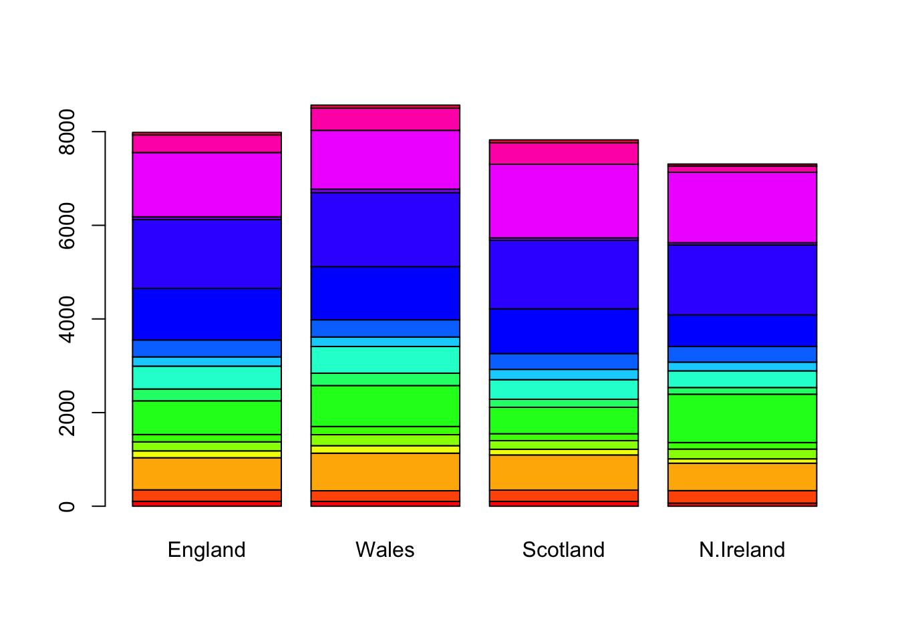
Let’s refine our barplot:
barplot( as.matrix(x), col = rainbow( nrow(x) ), beside = T )
Other visualizations that can be useful…
pairs(x, col = rainbow( nrow(x) ), pch = 16)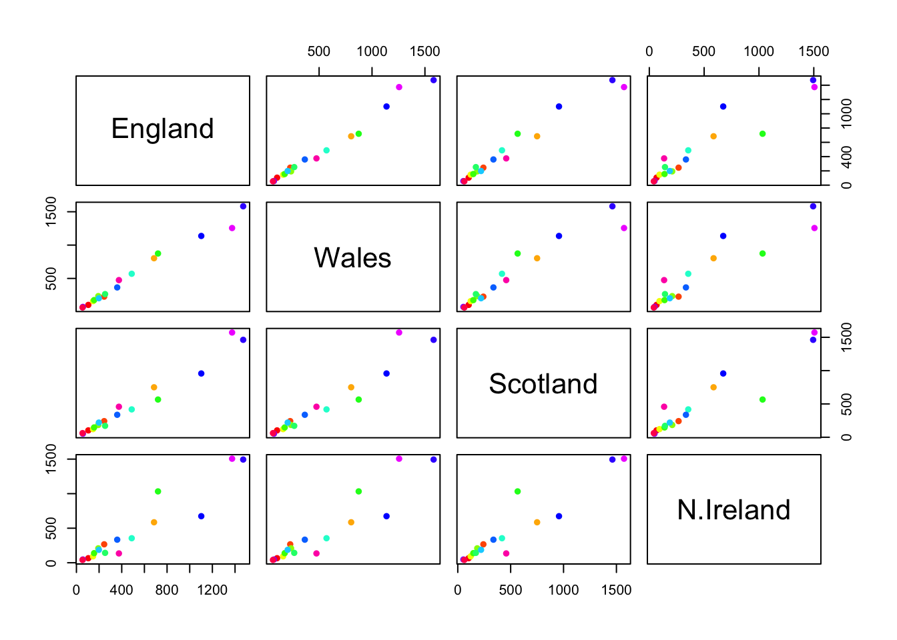
Let’s apply PCA (principal components analysis). For that, we need to use the command prcomp(). This function expects the transpose of our data.
# transpose_matrix <- t(x)
# pca <- prcomp( transpose_matrix )
pca <- prcomp( t(x) )
summary(pca)Importance of components:
PC1 PC2 PC3 PC4
Standard deviation 324.1502 212.7478 73.87622 4.189e-14
Proportion of Variance 0.6744 0.2905 0.03503 0.000e+00
Cumulative Proportion 0.6744 0.9650 1.00000 1.000e+00Let’s plot the PCA results
plot(pca)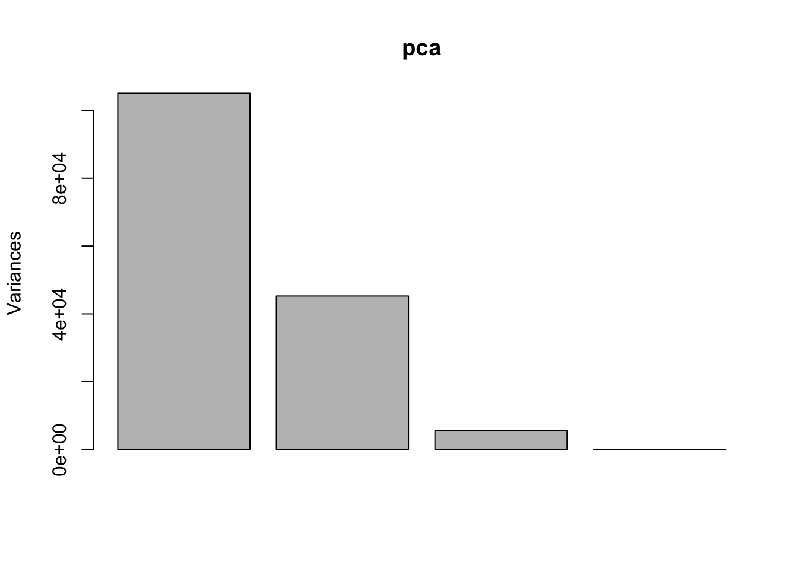
We need to access the results of the PCA analysis
attributes(pca)$names
[1] "sdev" "rotation" "center" "scale" "x"
$class
[1] "prcomp"We can explore the pca$x dataframe:
pca$x PC1 PC2 PC3 PC4
England -144.99315 2.532999 -105.768945 2.842865e-14
Wales -240.52915 224.646925 56.475555 7.804382e-13
Scotland -91.86934 -286.081786 44.415495 -9.614462e-13
N.Ireland 477.39164 58.901862 4.877895 1.448078e-13Plotting:
plot( x=pca$x[,1], y=pca$x[,2] )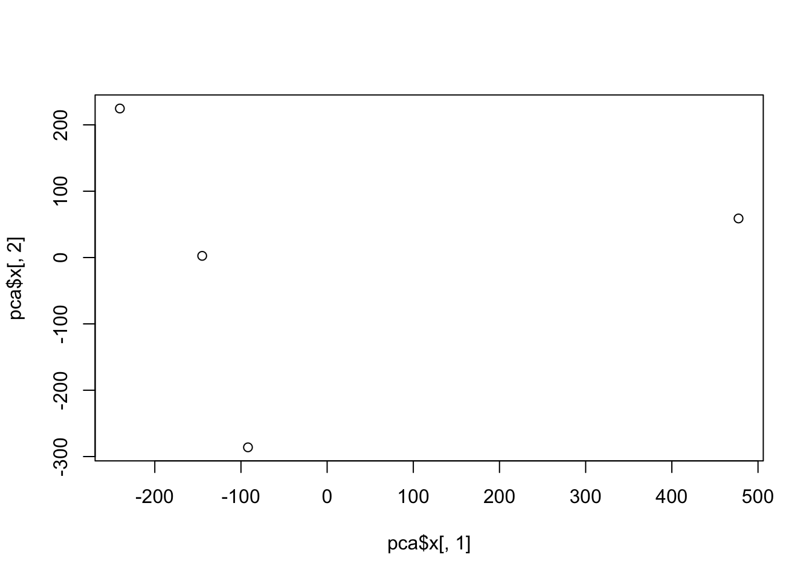
plot( x=pca$x[,1], y=pca$x[,2] )
colors_countries <- c('orange', 'pink', 'blue', 'green')
text( x=pca$x[,1], y=pca$x[,2], colnames(x), col = colors_countries)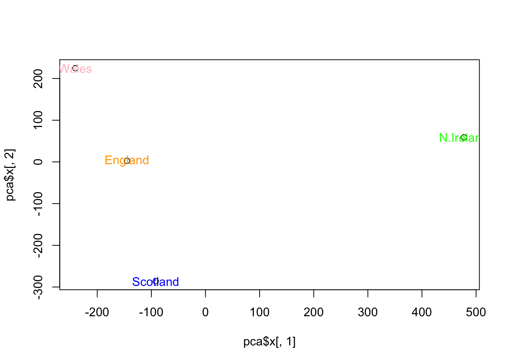
pca$scale[1] FALSEFIrst step as always is loading the data:
url2 <- "https://tinyurl.com/expression-CSV"
rna.data <- read.csv(url2, row.names=1)Q10: How many genes and samples are in this data set?
dim(rna.data)[1] 100 10I have 100 genes, and 10 samples.
Let’s apply PCA:
pca_rna = prcomp( t(rna.data) )
summary(pca_rna)Importance of components:
PC1 PC2 PC3 PC4 PC5 PC6
Standard deviation 2214.2633 88.9209 84.33908 77.74094 69.66341 67.78516
Proportion of Variance 0.9917 0.0016 0.00144 0.00122 0.00098 0.00093
Cumulative Proportion 0.9917 0.9933 0.99471 0.99593 0.99691 0.99784
PC7 PC8 PC9 PC10
Standard deviation 65.29428 59.90981 53.20803 3.142e-13
Proportion of Variance 0.00086 0.00073 0.00057 0.000e+00
Cumulative Proportion 0.99870 0.99943 1.00000 1.000e+00Let’s plot the principal components 1 and 2.
plot( pca_rna$x[,1], pca_rna$x[,2],
xlab = 'PC1', ylab = 'PC2')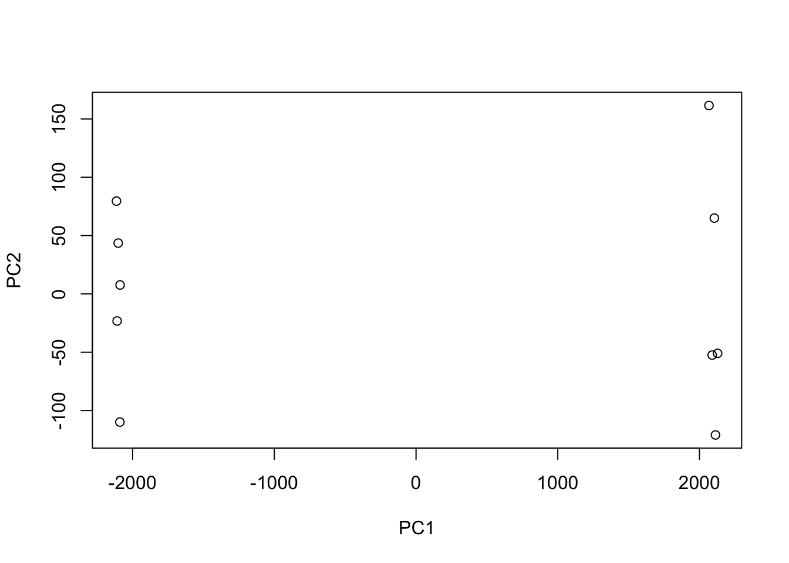
cols_samples <- c( rep('blue', 5), rep('red', 5) )
cols_samples [1] "blue" "blue" "blue" "blue" "blue" "red" "red" "red" "red" "red" plot( pca_rna$x[,1], pca_rna$x[,2],
xlab = 'PC1', ylab = 'PC2',
col = cols_samples)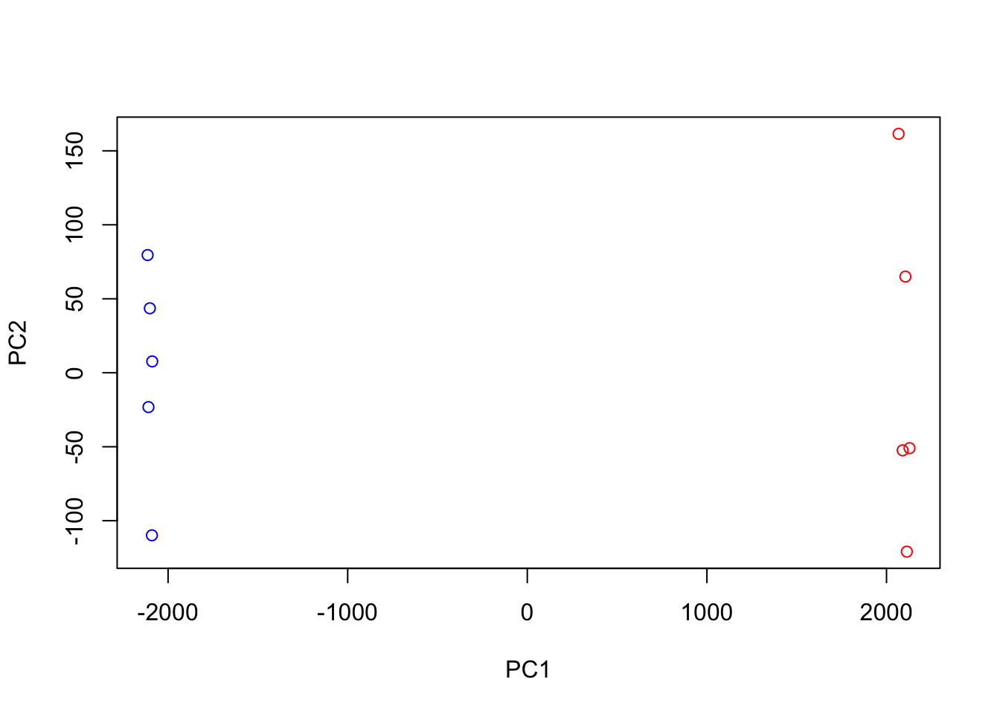
barplot(pca_rna$rotation[,1])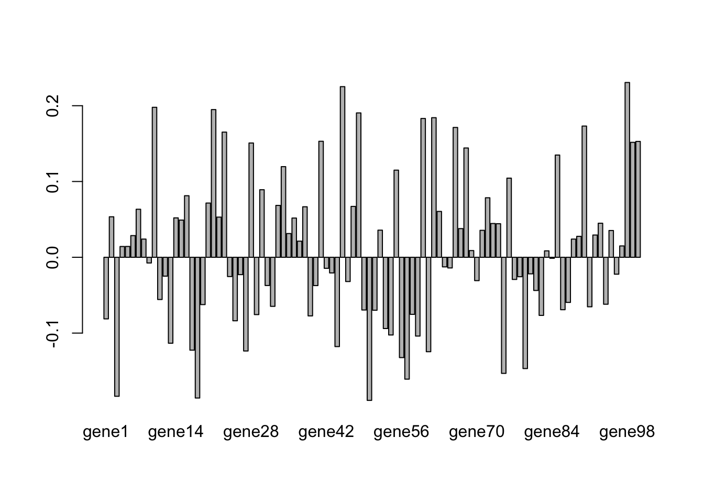
sort(pca_rna$rotation[,1]) gene50 gene18 gene3 gene57 gene75 gene79
-0.188796985 -0.185668500 -0.183374164 -0.160771014 -0.153164404 -0.146803635
gene56 gene61 gene27 gene17 gene44 gene13
-0.132330117 -0.124572881 -0.123615228 -0.122536548 -0.117808971 -0.113357525
gene59 gene54 gene53 gene25 gene1 gene39
-0.103935563 -0.102503320 -0.093979884 -0.083761992 -0.081247810 -0.077306742
gene82 gene29 gene58 gene51 gene49 gene86
-0.076658760 -0.075605635 -0.075274651 -0.069855142 -0.069530208 -0.069165267
gene91 gene32 gene19 gene94 gene87 gene11
-0.065288752 -0.064721235 -0.062411218 -0.061938300 -0.059547317 -0.055698801
gene81 gene40 gene31 gene46 gene70 gene77
-0.043780416 -0.037323670 -0.037219970 -0.031990529 -0.030784982 -0.029225446
gene78 gene24 gene12 gene26 gene96 gene80
-0.025639741 -0.025407507 -0.024870802 -0.022868107 -0.022293151 -0.021824860
gene43 gene42 gene65 gene64 gene9 gene84
-0.020617052 -0.014550791 -0.014052839 -0.012639567 -0.007495075 -0.001289937
gene83 gene69 gene4 gene5 gene97 gene37
0.008504287 0.008871890 0.014242602 0.014303808 0.014994546 0.021280555
gene88 gene8 gene89 gene6 gene92 gene35
0.024015925 0.024026657 0.027652967 0.028634131 0.029394259 0.031349942
gene95 gene71 gene52 gene67 gene74 gene73
0.035342407 0.035589259 0.035802086 0.037840851 0.044286948 0.044581700
gene93 gene15 gene36 gene14 gene22 gene2
0.044940861 0.049090676 0.051765605 0.052004194 0.053013523 0.053465569
gene63 gene7 gene38 gene47 gene33 gene20
0.060529157 0.063389255 0.066665407 0.067141911 0.068437703 0.071571203
gene72 gene16 gene30 gene76 gene55 gene34
0.078551648 0.081254592 0.089150461 0.104435777 0.114988217 0.119604059
gene85 gene68 gene28 gene99 gene100 gene41
0.134907896 0.144227333 0.150812015 0.151678253 0.152877246 0.153077075
gene23 gene66 gene90 gene60 gene62 gene48
0.165155192 0.171311307 0.173156806 0.183139926 0.184203008 0.190495289
gene21 gene10 gene45 gene98
0.194884023 0.197905454 0.225149201 0.230633225